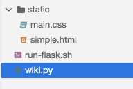

In this milestone, you'll add some personal styling to your group's wiki using CSS.
It is highly recommended to use pair programming for this milestone with your group to get experience using the Driver / Navigator model.
Create a static directory next to your Wiki's code, and add a file main.css.

Put a simple comment in the CSS source code:
/* This is where my CSS will go! */
Run your flask server and navigate to /static/main.css. You should be able to observe your comment served in this file.
Edit your template for page views. Add the following code to link the CSS to the HTML.
<link rel="stylesheet" href="/static/main.css" />
To test that the CSS link is working, add a background color or image to your main.css file. Observe that your browser shows the expected background color or image.
If you choose a dark background color, you may need to adjust the text color so it's readable. For example, if you chose a dark grey background, then white or light grey text may be the most readable.
Optionally, you can add Bulma CSS to your project using the following HTML code:
<link rel="stylesheet" href="https://cdn.jsdelivr.net/npm/bulma@0.9.2/css/bulma.min.css">
If you do this and make use of at least one Bulma feature or component, we will give you extra credit.
Remember: to receive a grade, you must submit a peer feedback form indicating which work you did and which was done by your teammates. Non-coding tasks such as help debugging also counts towards participation. This link will be generated and emailed to you after the due date.